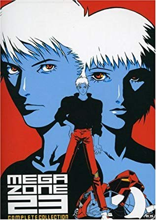
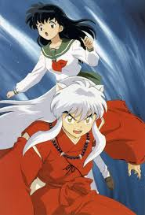
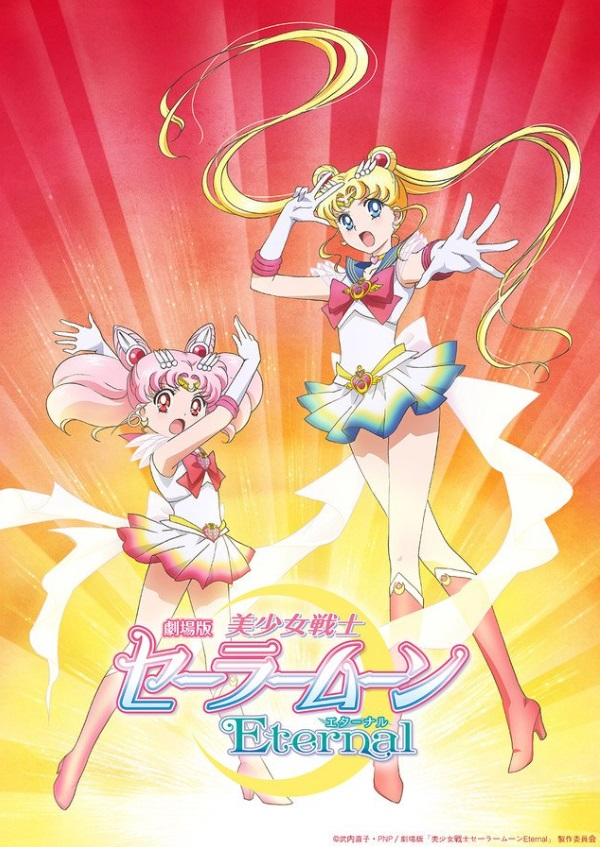
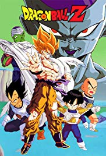
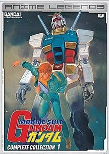

Original run: 1997
Original run: 2006 - 2007

Original run: 2004 - 2012
Original run: 2014
Original run: 2011

Original run: 2003 - 2004

Original run: 1997 - present
Original run: 1985 - 1989

Original run: 2004 - 2005
Original run: 2006 - 2007
Original run: 2007
Original run: 2016 - present
Original run: 1996
Original run: 2003
Original run: 2006 - 2007
Original run: 2005
Original run: 2004

Original run: 2012
Original run: 1989
Original run: 2006
Original run: 2014 - 2015
Original run: 1998
Original run: 2013 - 2014
Original run: 2002
Original run: 1999 - 2000
Original run: 1999 - 2000
Original run: 2005 - 2006
Original run: 2018
Original run: 2004 - 2005
Original run: 1998
Original run: 2000 - 2004

Original run: 1999 - present
Original run: 1992
Original run: 1963
Original run: 1992 - 1994
Original run: 2008
Original run: 1992 - 1997

Original run: 1971 - 1972
Original run: 2011 - 2014
Original run: 2004
Original run: 1996 - 1998
Original run: 1997
Original run: 1974
Original run: 1989

Original run: 1963

Original run: 1981 - 1982

Original run: 2000 - 2001
Original run: 2009 - 2010
Original run: 1995 - 1996
Original run: 1997 - 1998